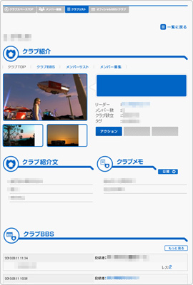
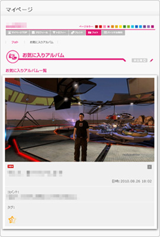

A club space has been added to the community section of the PS Home official site for club interaction.
The club space is a club-only page that can be set up by club leaders.
Club members can browse the member list and communicate on the club BBS.
The following information can be viewed from the club space TOP.

Club leaders can create a club introduction page.
From the participating clubs in the club space TOP, click the link of the club you own, or click the name of your club displayed in the menu of the sidebar to go to the introduction page creation screen.
(In the list of participating clubs in the sidebar, the clubs you own will be marked with a crown)
First, click the edit button (pencil mark) on the upper right and enter the club information.
To register an image that is registered in the photo as a club of the images, you can set the same as the page color and my page, it is also possible to produce a personality of the club unique
in the club introduction section the following functions can use I will.
If you are looking for a club to join, please see the Club Space Member Recruitment section. A list of clubs currently recruiting club members is displayed. If you want to see more details, click on the club name to go to the club introduction page.
If you want to search for clubs that meet specific criteria, you can use the search function to narrow down by keywords or club attributes.
In the recruitment article, you can only exchange messages with the leader.
* Message exchanges are invisible to other people.
Also, if you want to see the introduction page of clubs that are not recruited, please select the club list of the club space.
A list of clubs for which a club introduction page has been created is displayed. If you want to select according to specific conditions, you can also narrow down by keywords or club attributes.
You can browse and search the list, which is very convenient for people who want to join the club in the future.
If you haven't joined the club yet, why not take this opportunity to join the club and expand your circle of friends?

A new function "Favorite Album" has been added to PS Home Photo.
If you like the photos you have viewed, click the "Favorites Button"!
You can add up to 20 photos to your album and enjoy your favorite one at any time.
* If the photographer deletes a photo registered as a favorite or sets it to private, it will not be viewable from the favorite album.
Popular photos that have been registered as favorites by many people will now be marked with a star.